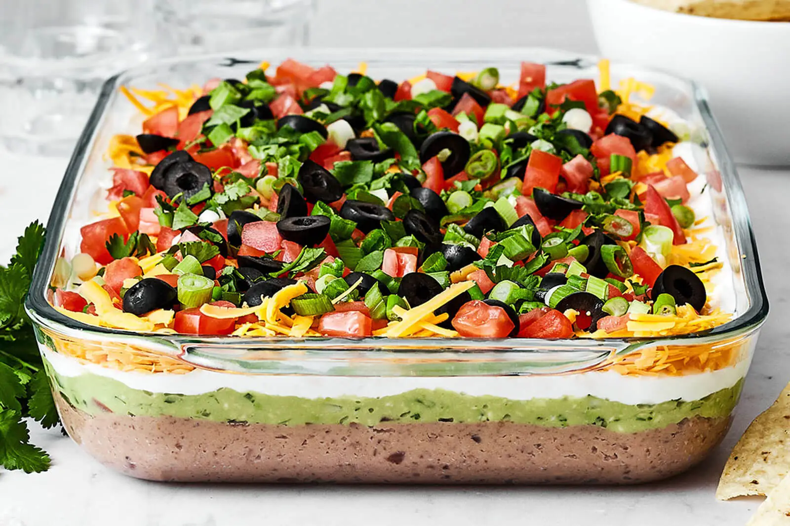

7 Layer Texas Dip

Description
A layered dip with a bean base. Serve with tortilla chips.
This is a wonderful game day dish.
Ingredients
- 9x13 Pan
- 2 cans jalapeno refried beans (mix with butter)
- 3 medium avocados
- 2 tablespoon lemon juice
- 1/2 teaspoon salt and pepper
- 1 cup sour cream
- 1/2 cup mayo
- 1 pkg. taco seasoning
- green onions
- 2 medium tomatoes
- 1 cup grated cheese
Steps
- Heat refried beans on stove. Mix in butter.
- Transfer beans to 9x13 pan.
- Mash avocadoes well in medium bowl. Mix in lemon juice, salt, and pepper. Transfer to pan.
- Mix sour cream, mayo, and taco seasoning in medium bowl. Transfer to pan.
- Add grated cheese, then tomatoes, then green onions.